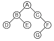
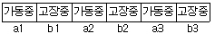
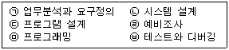
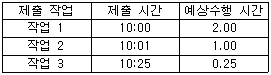
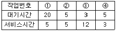
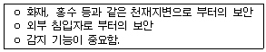
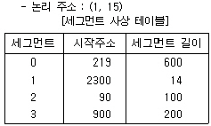

정보처리산업기사 (2005-03-20 기출문제)
1과목: 데이터 베이스
1. P.Chen 이 제안한 것으로 현실 세계에 존재하는 객체들과 그들 간의 관계를 사람이 이해하기 쉽게 표현한 모델은?
- 개체-관계(E-R) 모델
- 관계 데이터 모델
- 네트워크 데이터 모델
- 계층 데이터 모델
(정답률: 84%)

2. SQL에서 DELETE 질의 명령에 대한 형식으로 틀린 것은?
- DELETE FROM <테이블명> WHERE <삭제조건>
- DELETE FROM <테이블명> <삭제조건>
- DELETE FROM <테이블명> WHERE <중첩질의가 포함된 삭제조건>
- DELETE FROM <테이블명>
(정답률: 65%)
3. 데이터베이스 관리 시스템(DBMS)의 장점으로 거리가 먼 것은?
- 데이터의 중복을 최소화할 수 있다.
- 데이터의 일관성을 유지할 수 있다.
- 표준화를 기할 수 있다.
- 예비(backup)와 회복(recovery) 기법이 간단하다.
(정답률: 72%)
4. 그림의 이진트리를 Preorder로 운행하고자 한다. 트리의 각 노드를 방문한 순서로 옳게 나열된 것은?

- A-B-D-E-C-F-G
- D-B-E-A-C-G-F
- D-E-B-G-F-C-A
- A-B-C-D-E-F-G
(정답률: 65%)
5. 트리 구조에 대한 용어 설명 중 옳지 않은 것은?
- 어떤 노드의 서브트리 수를 그 노드의 차수라고 한다.
- 차수가 0인 노드를 단말 노드라고 한다.
- 같은 부모 노드를 가지는 노드를 형제 노드라고 한다.
- 모든 노드는 하나의 부모 노드를 가진다.
(정답률: 54%)
6. 포인터를 사용하여 리스트를 나타냈을 때의 설명 중 옳지 않은 것은?
- 새로운 노드의 삽입이 쉽다.
- 기억공간이 많이 소요된다.
- 한 리스트를 여러 개의 리스트로 분리하기 쉽다.
- 노드를 리스트에서 삭제하기 어렵다.
(정답률: 59%)
7. 뷰(view)에 대한 설명으로 옳지 않은 것은?
- 뷰는 데이터의 접근을 제어하게 함으로써 보안을 제공한다.
- 뷰는 데이터의 논리적인 독립성을 제공한다.
- 뷰의 테이블은 가상 테이블이다.
- 뷰의 테이블은 물리적인 구현으로 구성되어 있다.
(정답률: 75%)
8. 주어진 관계로 부터 원하는 관계를 얻기 위해 연산자와 연산규칙을 제공하는 언어를 무엇이라 하는가?
- 관계 행렬
- 관계 대수
- 관계 해석
- 관계 테이블
(정답률: 75%)
9. 효율적인 프로그램을 작성할 때 가장 우선적인 고려사항은 저장 공간의 효율성과 실행시간의 신속성이다. 자료구조의 선택은 프로그램 실행시간에 직접적인 영향을 준다. 자료구조에 관한 설명으로 거리가 먼 것은?
- 자료구조는 자료의 표현과 그것과 관련된 연산이다.
- 자료구조는 일련의 자료들을 조직하고 구조화하는 것이다.
- 어떠한 자료구조에서도 필요한 모든 연산들을 처리하는 것이 가능하다.
- 처리할 문제가 주어지면 평소에 주로 사용하던 자료구조를 적용하는 것이 좋다.
(정답률: 50%)
10. 정렬 알고리즘 선택에 영향을 미치는 요인으로 거리가 먼 것은?
- 사용 컴퓨터 시스템의 특성
- 정렬할 자료의 양
- 초기 자료의 배열 상태
- 액세스 빈도
(정답률: 36%)
11. 막대한 양의 자료를 각종 매체에 저장하는 기법을 파일 조직, 파일 편성 혹은 파일 구성 방법이라 한다. 일반적으로 많이 사용되는 파일 조직 방법 중에서 키 값에 따라 순차적으로 정렬된 데이터를 저장하는 데이터 지역(Data Area)과 이 지역에 대한 포인터를 가진 색인 지역(Index Area)으로 구성된 파일은?
- 링 파일(Ring File)
- 직접 파일(Direct File)
- 순차 파일(Sequential File)
- 색인 순차 파일(Indexed Sequential File)
(정답률: 88%)
12. DBA의 역할로 거리가 먼 것은?
- 데이터베이스 스키마 정의
- 사용자 요구 응용프로그램 작성
- 보안 정책과 무결성(integrity) 유지
- 예비조치(backup)와 회복(recovery)에 대한 절차수립
(정답률: 62%)
13. 데이터 언어에 대한 설명으로 옳지 않은 것은?
- 데이터 언어는 사용 목적에 따라 데이터 정의어, 데이터 조작어, 데이터 제어어로 나누어진다.
- 데이터 조작어(DML)에는 질의어가 있으며, 질의어는 터미널에서 주로 이용하는 절차적(procedural) 데이터 언어이다.
- 데이터 제어어(DCL)는 데이터를 보호하고 데이터를 관리하는 목적으로 사용된다.
- 데이터 정의어(DDL)는 데이터베이스를 정의하거나 수정할 목적으로 사용하는 언어이다.
(정답률: 65%)
14. 키는 개체 집합에서 고유하게 개체를 식별할 수 있는 속성이다. 데이터베이스에서 사용되는 키의 종류에 대한 설명 중 옳지 않은 것은?
- 후보키(candidata key) : 개체들을 고유하게 식별할 수 있는 속성
- 수퍼키(super key) : 두개 이상의 속성으로 구성된 기본키
- 외부키(foreign key) : 다른 테이블의 기본키로 사용 되는 속성
- 보조키(secondary key) : 후보키 중에서 대표로 선정된 키
(정답률: 60%)
15. 관계 데이터베이스의 정규화에 대한 설명으로 옳지 않은 것은?
- 정규화는 데이터베이스의 물리적 구조나 물리적 처리에 영향을 준다.
- 레코드들의 관련 속성들 간의 종속성을 최소화하기 위한 구성 기법이다
- 정규화의 목적은 논리적 데이터베이스 구조상에 있어 삽입, 수정, 그리고 삭제 결과 생기는 이상 현상(anomaly)을 제거하는데 있다.
- 정규화는 논리적 처리 및 품질에 큰 영향을 미친다.
(정답률: 37%)
16. 데이터베이스 설계의 물리적 설계 단계에서 수행하는 작업이 아닌 것은?
- 저장레코드 양식의 설계
- 스키마의 평가 및 정제
- 레코드 집중의 분석 및 설계
- 파일의 저장 구조 및 탐색 기법
(정답률: 60%)
17. 테이블에 있는 자료를 검색, 갱신, 삭제 및 삽입하는 SQL 문과 관계없는 것은?
- SELECT
- ADD
- UPDATE
- DELETE
(정답률: 80%)
18. 다음 영문과 관련되는 SQL 명령은?
- SELECT
- DELETE
- UPDATE
- DROP
(정답률: 62%)
19. 관계 데이터 모델의 무결성 제약 중 기본키 값이 널(null) 값일 수 없음을 의미하는 것은?
- 개체 무결성
- 참조 무결성
- 도메인 제약조건
- 주소 무결성
(정답률: 84%)
20. This is a linear list for which all insertions and deletions, and usually all accesses, are made at one and of the list. What is this?
- queue
- stack
- dimension
- tree
(정답률: 70%)
2과목: 전자 계산기 구조
21. CPU의 명령을 받고 입출력 조작을 개시하면 CPU와는 독립적으로 조작을 하는 것은?
- Register
- Channel
- Terminal
- Buffer
(정답률: 52%)
22. 적중률(hit ratio)은 어느 메모리와 관계되는가?
- SRAM
- 컴퓨터의 C드라이브
- 캐시 메모리
- CD 드라이브
(정답률: 72%)
23. CPU 클럭 중 동기 가변식에 관한 설명이 아닌 것은?
- 마이크로 오퍼레이션 수행 시간의 차이가 현저할 때 사용된다.
- 중앙처리장치의 시간을 효율적으로 이용할 수 있다.
- 수행 시간이 가장 긴 마이크로 오퍼레이션의 사이클 타임을 클럭 주기로 정한다.
- 모든 마이크로 오퍼레이션에 대하여 서로 다른 사이클을 정의할 수 있다.
(정답률: 44%)
24. 우선순위 인터럽트 중에서 소프트웨어적으로 우선순위가 높은 인터럽트를 알아내는 방식을 무엇이라고 하는가?
- 폴링(Polling)
- 데이지체인(daisy-chain)
- 병렬우선순위 인터럽트
- 직렬우선순위 인터럽트
(정답률: 65%)
25. 메모리의 내용을 레지스터에 전달하는 기능은?
- Load
- Fetch
- Transfer
- Store
(정답률: 52%)
26. 피 연산자의 위치(기억장소)에 따라 명령어 형식을 분류할 때 instruction cycle time이 가장 짧은 명령어 형식은?
- 레지스터-메모리 인스트럭션
- AC 인스트럭션
- 스택 인스트럭션
- 메모리 - 메모리 인스트럭션
(정답률: 41%)
27. interrupt에 관한 설명 중 옳지 않은 것은?
- program 착오 시 발생된다.
- hardware 착오 시 발생된다.
- operator가 임의로 발생시킬 수 없다.
- 주변장치의 입Χ출력 요청 시 발생된다.
(정답률: 61%)
28. 부동소수점 표현의 수치 자료 2개에 대하여 합산을 할 때 두 자료의 지수 베이스(base)는 같고, 지수 크기가 다르다면 지수를 어느 쪽에 일치시켜 계산해야 하는가?
- 지수가 큰 쪽에 일치시킨다.
- 지수가 작은 쪽에 일치시킨다.
- 어느 쪽에 일치시켜도 상관없다.
- 큰 쪽과 작은 쪽의 평균값에 일치시킨다.
(정답률: 52%)
29. 레지스터에 있는 내용을 왼쪽으로 2비트 시프트 시키는 기능과 관계있는 것은?
- 제어 기능
- 연산 기능
- 전송 기능
- 레지스터 기능
(정답률: 68%)
30. 내용에 의하여 액세스 되는 메모리 장치는?
- CAM
- 가상(virtual) 메모리
- ROM
- DRAM
(정답률: 46%)
31. 논리식 Y=A+AB+AC 를 간략화 하면?
- Y=A
- Y=B
- Y=A+B
- Y=A+C
(정답률: 66%)
32. OP 코드가 5비트, Operand가 11비트인 명령어가 갖는 매크로 연산의 종류는 몇 가지인가?
- 5가지
- 32가지
- 128가지
- 2048가지
(정답률: 55%)
33. 인터럽트 요인이 발생하였을 때 CPU가 처리하지 않아도 되는 것은?
- 프로그램 카운터의 내용
- 관련 레지스터의 내용
- 스택(stack)의 내용
- 입출력장치 내용
(정답률: 42%)
34. CPU에서 연산 처리된 데이터를 출력하기 위한 데이터의 형식은?
- pack된 10진법 형식
- pack된 2진법 형식
- unpack된 10진법 형식
- unpack된 2진법 형식
(정답률: 48%)
35. 순차적으로만 자료를 처리할 수 있으며 주소가 없는 기억장치는?
- magnetic tape
- magnetic drum
- disk pack
- disk cartridge
(정답률: 67%)
36. 기억장치의 사이클 타임(Mt)이 기억장치의 액세스 타임(At) 보다 항상 크거나 같은 관계식을 갖는 기억장치는 어떤 것인가?
- DRO(Destructive Read Out) Memory
- NDRO(Non Destructive Read Out) Memory
- DRAM(Dynamic Random Access Memory)
- ISAM(Indexed Sequential Access Memory)
(정답률: 25%)
37. 인스트럭션 형식 중 자료의 주소를 지정할 필요가 없는 형식은?
- 1-주소
- 2-주소
- 3-주소
- 0-주소
(정답률: 74%)
38. 산술연산에서 overflow가 발생했을 경우 이것을 검출해야 하는데 이 때 사용되는 논리 게이트는?
- NOR
- OR
- Exclusive-OR
- NAND
(정답률: 69%)
39. 메모리로 부터 읽은 내용이 오퍼랜드(operand)의 번지일 경우 컴퓨터의 사이클(cycle)은?
- 인터럽트 사이클
- 페치 사이클
- 실행 사이클
- 간접 사이클
(정답률: 35%)
40. 다음 중 계산에 의한 주소 지정방식이 아닌 것은?
- 상대 주소 지정방식(Relative Addressing Mode)
- 인덱스레지스터 주소 지정방식(Index Register Addressing Mode)
- 베이스레지스터 주소 지정방식(Base Register Addressing Mode)
- 즉시 주소 지정방식(Immediate Addressing Mode)
(정답률: 52%)
3과목: 시스템분석설계
41. HIPO(Hierarchy Plus Input Process Output)를 구성하는 3단계 패키지에 해당되지 않는 것은?
- 기능 다이어그램
- 도식 목차
- 총괄 다이어그램
- 상세 다이어그램
(정답률: 35%)
42. 입력 데이터에 대한 오류 체크로 계산처리 단계에서 수행되는 것은?
- 논리 체크(logical check)
- 범위 체크(limit check)
- 대조 체크(matching check)
- 한계초과 체크(overflow check)
(정답률: 23%)
43. 테이프 파일에 수록된 내용을 디스크에 수록하는 처리는 처리 패턴의 종류 중 무엇에 해당하는가?
- extract
- conversion
- update
- collate
(정답률: 47%)
44. 리스트 편성파일의 특징으로 올바르지 않는 것은?
- 파일의 구조가 복잡하다.
- 처리효율이 떨어진다.
- 포인터 값의 변경으로 레코드 추가가 어렵다.
- 기억장소의 낭비가 크다.
(정답률: 46%)
45. 어떤 시스템의 운용 기간이 다음과 같을 때 평균 고장 시간(MTBF : Mean Time between Failure)을 계산하는 수식으로 옳은 것은?

- (a1+a2+a3)/3
- (b1+b2+b3)/3
- (b1+b2+b3)/(a1+a2+a3)
- (a1+a2+a3)/(a1+a2+a3+b1+b2+b3)
(정답률: 37%)
46. 설계단계에서 산출된 설계사양서에서 내용을 컴퓨터가 인식할 수 있는 프로그램코드로 변환, 작성하는 단계는 시스템 개발 중 어느 단계에 해당하는가?
- 시스템 구현
- 시스템 실행
- 시스템 설계
- 시스템 분석
(정답률: 51%)
47. 시스템의 기본 구성요소에 해당하지 않는 것은?
- 처리(PROCESS)
- 제어(CONTROL)
- 피드백(FEED BACK)
- 통신(COMMUNICATION)
(정답률: 63%)
48. 사람의 손에 의하여 코드를 기입하는 경우에 틀리지 않도록 하기 위하여 사용되는 방법과 거리가 먼 것은?
- 고무인의 사용
- 사전 인쇄
- 교육 훈련
- 컴퓨터에 의한 코드 설계
(정답률: 48%)
49. 구조적 설계에서 기능 수행시 모듈간의 최소한의 상호작용을 하여 하나의 기능만을 수행하는 정도를 표현하는 용어는?
- 응집도
- 캡슐화
- 모듈화
- 정보은폐
(정답률: 38%)
50. 전표처리에서 원장 또는 대장에 해당되는 파일로서 데이터 처리 시스템에서 중추적 역할을 담당하며 기본이 되는 데이터의 축적파일은?
- 마스터 파일(Master file)
- 트랜잭션 파일(Transaction file)
- 히스토리 파일(History file)
- 섬머리 파일(Summary file)
(정답률: 76%)
51. 코드 설계의 요구사항으로 틀린 것은?
- 코드의 자릿수는 되도록 짧고 간결해야 한다.
- 코드와 데이터는 1:N의 대응관계가 있는 것처럼 다양성을 가져야 한다.
- 쉽게 그룹의 형태로 나눌 수 있거나 분류가 쉬어야 한다.
- 일관성이 있어야 한다.
(정답률: 69%)
52. 프로그램 테스트에 대한 설명으로 잘못된 것은?
- 단위 테스트(Unit Test) : 개발자나 개발 부서에서 각 모듈에 논리적인 로직이나 인터페이스의 기능을 테스트 한다.
- 통합테스트(Integration Test) : 개발된 모듈들을 통합해 가면서 테스트하는 것으로 하향식, 상향식, 혼합식 테스트가 있다.
- 기능 테스트(Function Test) : 함수들의 논리적인 기능들이 정확한 알고리즘으로 표현되었는지를 테스트한다.
- 시스템 테스트(System Test) : 완성된 시스템이 요구사항을 만족시키는지를 테스트한다.
(정답률: 31%)
53. 발생한 데이터를 전표 상에 기록하고, 일정한 시간 단위로 일괄 수집하여 입력매체에 수록하는 입력 형식은?
- 분산 매체화 시스템
- 집중 매체화 시스템
- 턴 어라운드(turn around) 시스템
- 온라인 단말기 입력시스템
(정답률: 61%)
54. IPT의 목적으로 옳지 않은 것은?
- 생산성 향상
- 표준화의 일환
- 개인적인 차이의 극대화
- 출력 지향보다 품질을 중시
(정답률: 71%)
55. 코드화 대상의 명칭이나 약호를 코드의 일부에 넣어서 대상을 외우기 쉽도록 하는 코드는?
- Group classification code
- Block code
- Decimal code
- Mnemonic code
(정답률: 53%)
56. 키 값에 따라 정렬된 레코드를 순차적으로 접근하거나, 주어진 키 값에 따라 임의로 접근하는 것이 모두 가능한 파일 형식은?
- 순차 파일
- 직접 파일
- 색인 순차 파일
- 리스트 파일
(정답률: 63%)
57. 출력 보고서 설계시 고려 사항이 아닌 것은?
- 이용자
- 이용목적
- 보고서의 양
- 보고서의 보관순서
(정답률: 57%)
58. 시스템 개발 순서를 옳게 나열한 것은?(일부 컴퓨터에서 보기의 특수문자가 보이지 않아서 괄호뒤에 다시 표기 하여 둡니다.)

- (ㄱ) → (ㄴ) → (ㄷ) → (ㄹ) → (ㅁ) → (ㅂ)
- (ㄱ) → (ㄹ) → (ㄴ) → (ㄷ) → (ㅁ) → (ㅂ)
- (ㄹ) → (ㄱ) → (ㄴ) → (ㄷ) → (ㅁ) → (ㅂ)
- (ㄹ) → (ㄱ) → (ㄷ) → (ㄴ) → (ㅁ) → (ㅂ)
(정답률: 44%)
59. 하나 이상의 유사한 객체들을 묶어서 하나의 공통된 특성을 표현한 객체 지향의 요소는?
- 객체(object)
- 클래스(class)
- 실체(instance)
- 메시지(message)
(정답률: 77%)
60. 순차코드(Sequence Code)와 비교할 때 블록코드(Block Code)의 장점으로 볼 수 없는 것은?
- 적은 자리수로 많은 항목을 표시할 수 있다.
- 코드의 범위를 무한대로 확장 가능하다.
- 예비코드를 사용할 수 있어 항목의 추가가 용이하다.
- 공통된 특성별로 분류 및 집계가 용이하다.
(정답률: 47%)
4과목: 운영체제
61. 파일 디스크립터에 포함되는 내용이 아닌 것은?
- 파일의 이름
- 보조기억장치에서의 파일의 위치
- 생성된 날짜와 시간
- 파일 오류에 대한 수정 방법
(정답률: 69%)
62. 운영체제의 형태 중 공장의 공정제어 등에 사용되어 처리해야 할 작업이 발생한 시점에서 즉각적으로 처리하여 그 결과를 얻어내는 방식은?
- 일괄처리 방식
- 분산처리 방식
- 오프라인 방식
- 실시간 방식
(정답률: 74%)
63. 다음과 같은 상황으로 작업이 제출되었다고 할 때, 작업 스케줄링 방법 중 SJF(Shortest Job First)를 적용한다면 작업 3이 완료되는 시간은?

- 3:25
- 10:25
- 12:25
- 13:25
(정답률: 47%)
64. 시간 할당량(Quantum)과 가장 관련 깊은 작업 스케줄링 방식은?
- Round-robin
- SJF
- FIFO
- HRN
(정답률: 61%)
65. 아래의 작업 중 운영체제가 CPU 스케줄링 기법으로 HRN 방식을 구현했을 때 우선순위가 가장 높은 것은?

- ①
- ②
- ③
- ④
(정답률: 63%)
66. 가상기억장치 성능에 중요한 영향을 미치는 페이지 교체 알고리즘에 대한 설명 중 옳지 않은 것은?
- FIFO - 가장 오랫동안 주기억장치에 있었던 페이지를 교체
- 최적 교체- 가장 오랫동안 사용되지 않을 페이지를 교체
- LRU - 최근에 사용한 페이지를 교체
- 2차 기회(second chance) - 참조 비트를 이용해 FIFO 알고리즘을 개선
(정답률: 47%)
67. 다음 중 UNIX파일 시스템에서 -rwxr-xr-x 권한에 대한 설명으로 옳은 것은?
- 디렉토리에 대한 접근권한을 설명하고 있다.
- 이 파일의 소유자는 읽기와 실행만이 가능하다.
- 이 파일은 모든 사용자가 실행할 수 있다.
- 이 파일은 모든 사용자가 쓰기 권한을 갖는다.
(정답률: 36%)
68. 분산 운영체제에 대한 설명으로 잘못된 것은?
- 분산 운영체제는 전체 운영체제로서 각각의 컴퓨터를 실행시킨다.
- 분산 운영체제는 동적으로 프로세스를 CPU에게 할당한다.
- 분산 운영체제는 사용자들이 기계들의 종류를 알고 있어야 한다.
- 네트워크 운영체제에 비해 일관성 있는 시스템 설계가 가능하다.
(정답률: 64%)
69. 다중 처리 시스템(Multi-Processing System)에 대한 설명으로 옳지 않은 것은?
- 여러 개의 CPU를 사용하여 응용 프로그램을 여러 개의 처리기로 실행함으로써 작업의 신속한 처리가 가능하다
- 다중 처리기 자체의 중복성으로 인해 가용성을 증진시키며, 단일 지점의 고장은 제거될 수 있다.
- 운영체제가 여러 CPU 간의 기억장치를 공유하기 위한 스케쥴링이 간단해진다.
- 서로 다른 응용 프로그램에 대해 서로 다른 목적을 위해 자신을 동적으로 재구성할 수 있다.
(정답률: 44%)
70. 가상기억장치에 대한 설명으로 옳지 않은 것은?
- 프로세스의 전체가 완전히 기억장치 내에 존재하지 않아도 수행이 가능한 기법이다.
- 가상기억장치는 실제 메모리로부터 사용자 논리 메모리를 분리하는 것이다.
- 가상기억장치는 구현하기 쉽고, 만약 잘못 사용하여도 실질적인 성능과는 무관하다.
- 가상기억장치는 대개 요구 페이징(demand paging)에 의해서 구현된다.
(정답률: 55%)
71. 보조기억장치의 보안 유지 기법 중 다음은 무엇에 해당하는가?

- 시설보안
- 운용보안
- 사용자 인터페이스 보안
- 내부 보안
(정답률: 63%)
72. 순차파일의 장점이 아닌 것은?
- 간단한 구조이기 때문에 특정 레코드를 검색하기 편리하다.
- 레코드들을 순차적으로 저장하기 때문에 저장매체의 효율이 높다.
- 어떠한 저장매체에서도 파일 구성이 가능하다.
- 레코드 정렬순서에 따라 순차적으로 접근하기 때문에 다음 레코드에 대한 접근 속도가 빠르다.
(정답률: 47%)
73. 분산처리 시스템의 장점에 해당하지 않는 것은?
- 계산속도 향상
- 보안의 용이성 향상
- 신뢰성 향상
- 자원 공유 증대
(정답률: 63%)
74. UNIX에서 i-node에 들어있는 정보가 아닌 것은?
- 파일의 유형
- 파일의 보호권한
- 최종 수정시간
- 자유 블록 비트맵
(정답률: 59%)
75. 병행중인 프로세스들 간에 공유 변수를 액세스하고 있는 하나의 프로세스 이외에는 다른 모든 프로세스들이 공유 변수를 액세스하지 못하도록 제어하는 기법을 무엇이라 하는가?
- 상호보완
- 상호배제
- 접근제한
- 상호접근제한
(정답률: 66%)
76. 디스크 대기 큐가 65, 112, 40, 16, 90, 165, 35 이고 입출력 헤드의 처음 위치가 100, 전체 트랙길이가 200 일 때 트랙 접근 순서가 90, 112, 65, 40, 35, 16, 165 이고 헤드 이동거리가 10, 22, 47, 25, 5, 19, 149 라면 사용된 디스크 스케쥴링 기법은?
- FIFO(First-In First-Out)
- SSTF(Shortest Seek Time First)
- SCAN
- LOOK
(정답률: 67%)
77. 인터럽트의 종류 중 입출력 수행, 기억 장치 할당, 오퍼레이터와의 대화 등을 위하여 발생하는 것은?
- 기계 검사 인터럽트
- 외부 인터럽트
- 입/출력 인터럽트
- SVC 인터럽트
(정답률: 27%)
78. 어떤 프로세스가 실행에 필요한 수만큼의 프레임을 갖지 못하여 빈번한 페이지 부재(page fault)의 발생으로 프로그램 수행에 보내는 시간보다 페이지 교환에 보내는 시간이 더 큰 현상은?
- 요구 페이징(demand paging)
- 스래싱(thrashing)
- 단편화 (fragmentation)
- 블록킹(blocking)
(정답률: 70%)
79. 아래와 같이 주어진 세그먼트 사상 테이블을 이용하여 다음의 논리적 주소를 물리적 주소로 변환하면? (단, 논리적인 주소는 (세그먼트 ID, 변위)로 구성되어 있다.)

- 2300
- 2315
- 115
- 오류 발생
(정답률: 42%)
80. 교착 상태의 예방을 위하여 각 자원 유형에 일련의 순서번호를 부여하는 것은 다음 중 어떤 교착상태 발생 조건을 제거하기 위한 것인가?
- 상호배제 조건
- 점유와 대기 조건
- 비선점 조건
- 환형대기 조건
(정답률: 30%)
5과목: 정보통신개론
81. 대표적인 문자 위주 프로토콜로 BSC(Binary Synchronous Control)가 있다. 이의 특징으로 적합하지 않은 것은?
- 전이중 전송만 지원한다.
- 에러제어와 흐름제어를 위해서는 정지-대기 방식을 사용한다.
- 점-대-점(Point to point)링크 뿐만 아니라 멀티포인트 링크에서도 사용될 수 있다.
- 주로 동기전송을 사용하나 비동기 전송방식을 사용하기도 한다.
(정답률: 47%)
82. 다음 중 데이터 통신에서의 변복조 방식이 아닌 것은 ?
- 진폭편이 변조(ASK)
- 위상편이 변조(PSK)
- 주파수편이 변조(FSK)
- 주파수 디지털 변조(PDK)
(정답률: 63%)
83. 프로토콜(protocol)의 구성요소가 아닌 것은 ?
- Syntax
- Semantics
- Interface
- Timing
(정답률: 65%)
84. 정보통신에서 통신처리의 설명 중 가장 적합한 것은?
- 기계대 기계의 통신에서 일어날 수 있는 과정으로써 속도변환, 프로토콜변환 등을 말한다.
- 문자, 도형, 화상 등의 인식과 변환이다.
- 전송 효율화를 위한 교환이나 다중화기능이다.
- 데이터로부터 목적하는 정보를 창출하고 이를 가공하며, 보관하는 일이다.
(정답률: 45%)
85. ISDN을 사용하는 경우 얻어지는 특징이 아닌 것은 ?
- 사용자는 단일/복수의 다른 사용자와 동시에 교대로 음성, 문자, 데이터 통신서비스를 제공받을 수 있다.
- 단일 가입자 번호로 다양한 종류의 서비스를 제공받을 수 있다.
- 초고속망용이므로 저속용 전화, FAX, DATA, CATV 등의 통신 서비스를 제공받기가 어려워진다.
- 많은 부가가치를 얻을 수 있다.
(정답률: 65%)
86. 전송회선을 통신방식에 의해 분류할 때 ON-OFF 무전기에서 사용되는 방식은?
- 단방향회선
- 반이중회선
- 전이중회선
- 4선식회선
(정답률: 71%)
87. 다음 중 무선계 뉴미디어에 속하는 것은 ?
- WAN
- ISDN
- VAN
- Teletext
(정답률: 55%)
88. ISDN 서비스 중 통신망과 단말 기능을 제공하는 서비스로 OSI 상위 4개 계층까지도 지원하는 이용자 측의 서비스는?
- 텔레서비스
- 베어러서비스
- 부가서비스
- D채널 비접속서비스
(정답률: 50%)
89. 브리지(Bridge)에 대한 설명 중 틀린 것은?
- LAN과 LAN을 연결한다.
- 프로토콜이 다른 LAN을 확장할 때 사용한다.
- 데이터의 움직임을 제어함으로서 LAN간의 트래픽 양을 조절하는 기능이 있다.
- 데이터링크 계층까지 작동한다.
(정답률: 29%)
90. 멀티미디어 표준화방식에서 동화상 압축 표준화에 해당되는 것은?
- JPEG
- MPEG
- MHEG
- HTTP
(정답률: 67%)
91. 다음 중 광통신의 장점으로 맞지 않은 것은?
- 세심 경량성
- 광대역성
- 보안성
- 전기적 유도성
(정답률: 52%)
92. 위성통신의 특징을 잘못 표현한 것은?
- 광대역 통신이 가능하다.
- 광범위한 지역에 서비스를 제공할 수 있다.
- 대용량, 고품질의 정보 전송이 가능하다.
- 전파지연이 없으나 감쇄현상이 나타날 수 있다.
(정답률: 70%)
93. PCM 방식에서 음성신호의 경우 표본화 간격에 해당되는 시간은 몇 [μs]인가? (단, 표본화 주파수는 8[KHz]이다.)
- 125
- 250
- 500
- 1000
(정답률: 46%)
94. 디지털 신호를 아날로그 신호로 변환시키는 방법 중 0과 1에 따라 주파수를 변화시키는 변조 방식은 ?
- ASK
- FSK
- PSK
- QAM
(정답률: 48%)
95. 통신회선의 다중화를 함으로서 얻어지는 가장 큰 장점은?
- 에러정정이 쉽다.
- 송·수신 시스템이 간단하다.
- 선로의 공동이용이 가능하다.
- 전송속도가 현저히 빨라진다.
(정답률: 52%)
96. 다음 중 데이터 전송계라고 볼 수 없는 것은 ?
- DSU
- Microwave
- CPU
- MODEM
(정답률: 65%)
97. 시분할방식(Time Sharing System)에 가장 적합한 것은 ?
- 시스템상의 공간적 기능을 분할하는 방식이다.
- 주파수 동기를 맞추어 주는 기능이다.
- 하나의 컴퓨터를 여러 개의 단말기가 공동으로 사용하도록 하는 시스템이다.
- 아날로그 이동통신에 사용되는 통신방식이다.
(정답률: 63%)
98. OSI 7계층 참조모델을 크게 상위레벨과 하위레벨로 구분할 수 있다. 다음 중 하위레벨에 해당하지 않는 계층은?
- 물리 계층
- 네트워크 계층
- 트랜스포트 계층
- 데이터링크 계층
(정답률: 65%)
99. 다음 중 비교적 좁은 지역(구내 건물 등)에 구성하여 이용하는 대표적인 정보통신망은?
- LAN
- WAN
- VAN
- ISDN
(정답률: 73%)
100. 근거리통신망(LAN)의 액세스 제어방식 중 채널의 상태를 파악하여 채널이 사용 중이면 일정시간 기다렸다가 다시 채널 상태를 살펴본 후 채널이 사용 중이 아닐 때 액세스하는 방식은?
- CSMA/CD
- 토큰링(Token Ring)
- 토큰버스(Token Bus)
- 폴링(Polling)
(정답률: 49%)